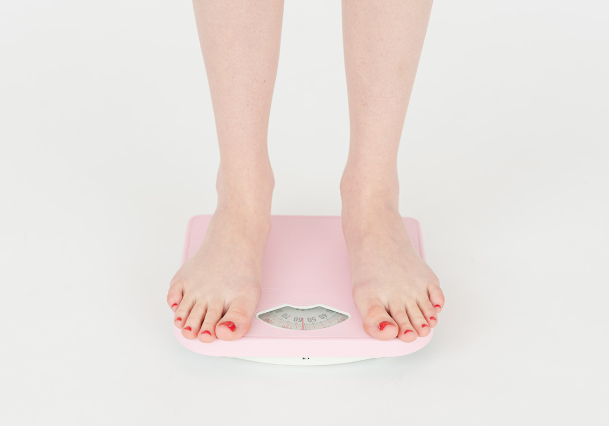

什麼是BMI？
BMI，是Body Mass Index的縮寫，即「身體質量指數」，是國際上常用的衡量人體肥胖程度的重要標準。 BMI是通過我們人體體重與身高這兩個數值來獲取的，可有效評判一個人的健康營養狀況。
它的計算方法也很簡單：
BMI = 體重（公斤） / 身高平方（公尺平方）
比如說一個身高160、體重50公斤的人，那麼她的BMI就是50/1.6²=19.5，以此類推下去計算。
但是因為BMI指數的參考標準只有身高以及體重，並沒有辦法很精確的測量出身體的組成成分。所以就算是同樣BMI的兩個人，在身材上也有可能有極大的差異，這也是為什麼會有「BMI標準但體脂過高」的泡芙人出現的原因。

BMI标准
國民健康署建議成人BMI應維持在18.5（kg/㎡）及24（kg/㎡）之間，太瘦、過重或太胖皆有礙健康。研究顯示，體重過重或是肥胖（BMI≧24）為糖尿病、心血管疾病、惡性腫瘤等慢性疾病的主要風險因素；而過瘦的健康問題，則會有營養不良、骨質疏鬆、猝死等健康問題。
成人肥胖定義
BMI是健康的良好指標嗎？
儘管擔心 BMI 不能準確識別一個人是否健康，但大多數研究表明，一個人患慢性病和過早死亡的風險確實會隨著 BMI 低於 18.5（“體重不足”）或 30.0 或更高（“肥胖”）而增加)。
由於大多數研究表明肥胖者患慢性病的風險增加，因此許多衛生專業人員可以使用 BMI 作為一個人風險的一般快照。儘管如此，它不應該是唯一使用的診斷工具。
可能不適用於所有人群
儘管 BMI 有許多缺陷，但它仍然被用作主要的評估工具，因為它方便、經濟且適用於所有醫療機構。
然而，BMI 的替代品可能是一個人健康的更好指標——儘管每個人都有自己的一系列優點和缺點。
腰圍
較大的腰圍——女性大於 35 英寸（85 厘米）或男性大於 40 英寸（101.6 厘米）——表明腹部區域的身體脂肪較多，這與患慢性病的風險較高有關。它很容易測量，只需要一個捲尺。
體脂百分比
體脂百分比是一個人體內脂肪的相對量。它區分脂肪量和無脂肪量，並且比 BMI 更準確地表示健康風險。但是評估工具（例如皮褶測量、便攜式生物電阻抗分析和家用秤）具有很高的出錯風險。
體重指數 (BMI) 是一種備受爭議的健康評估工具，旨在評估一個人的身體脂肪和健康狀況不佳的風險。BMI 沒有考慮健康的其他方面，例如年齡、性別、脂肪量、肌肉量、種族、遺傳和病史。雖然 BMI 可以作為一個有用的起點，但它不應該是衡量您健康狀況的唯一指標。